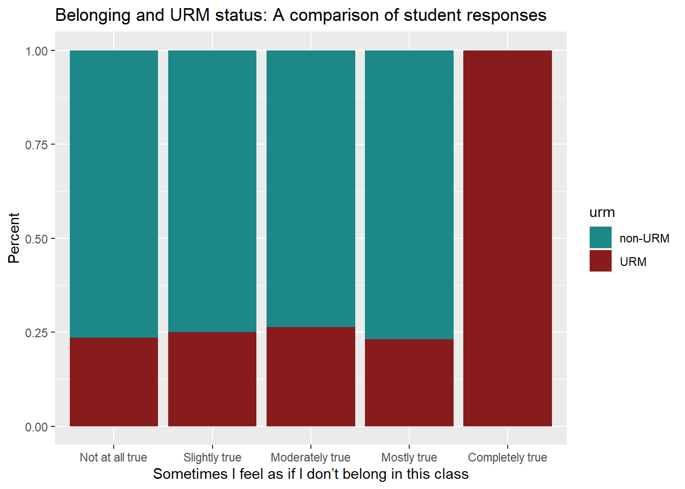
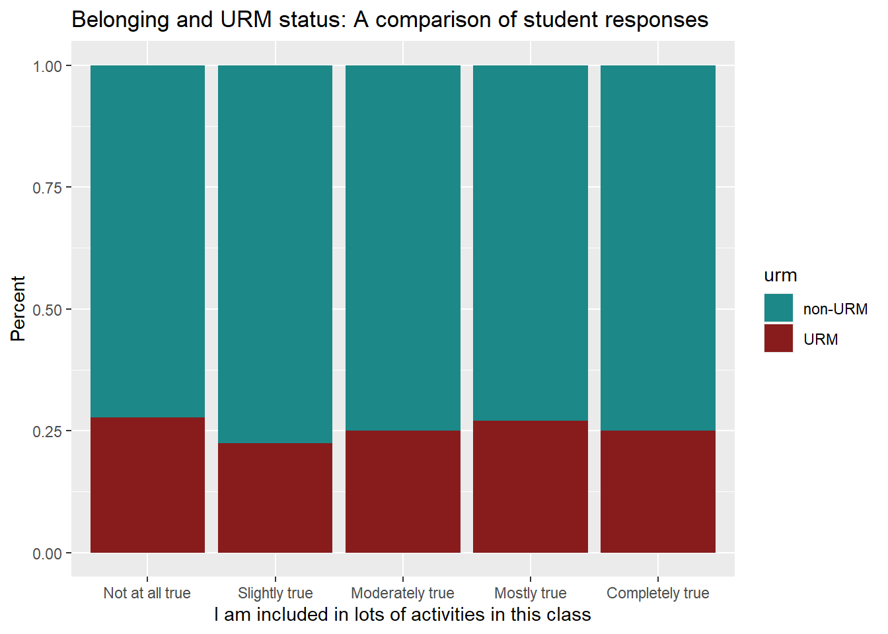
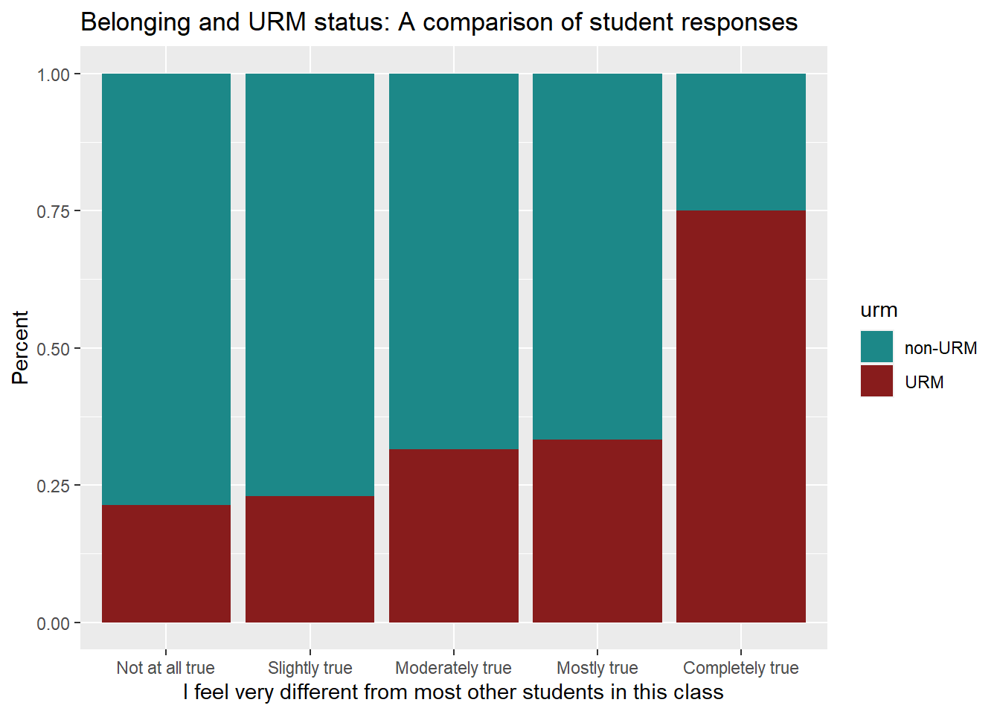
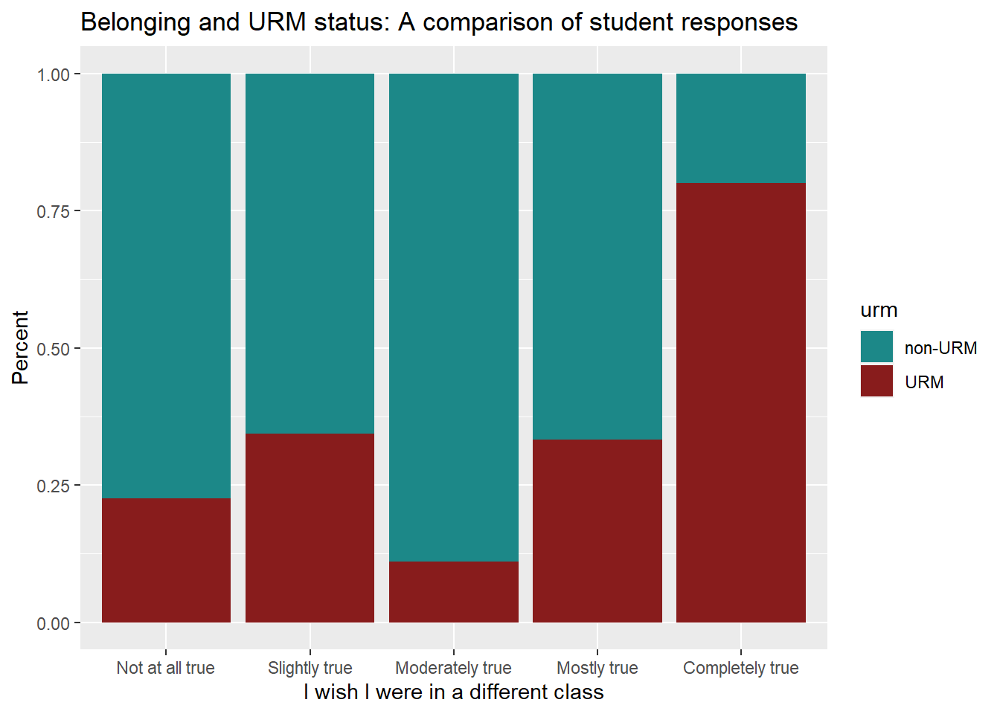
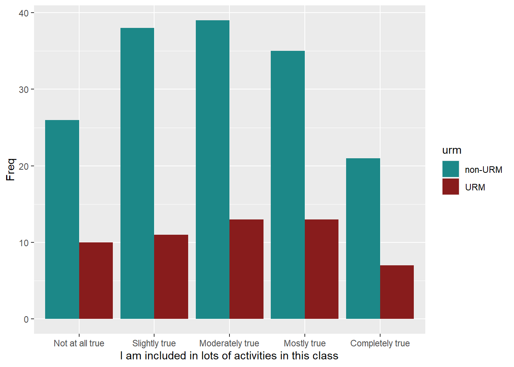
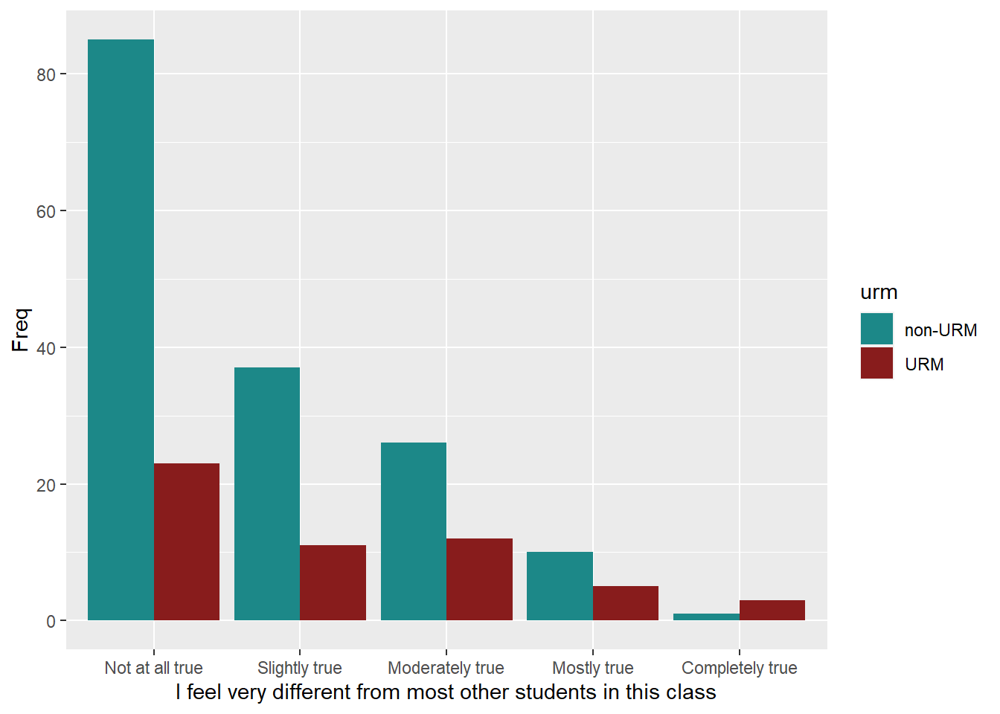
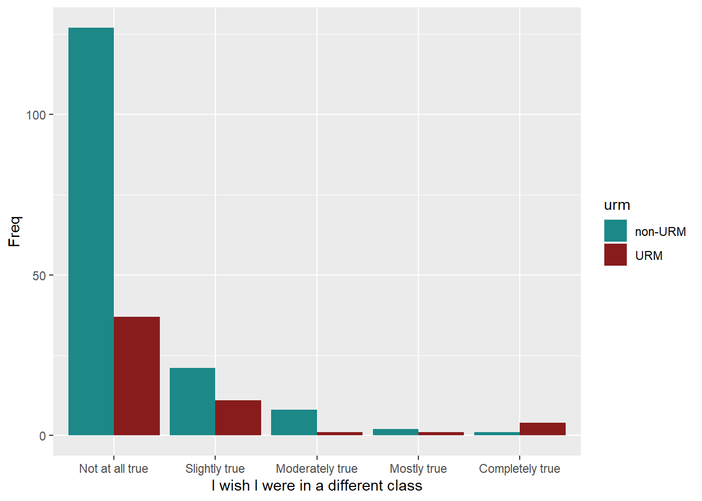
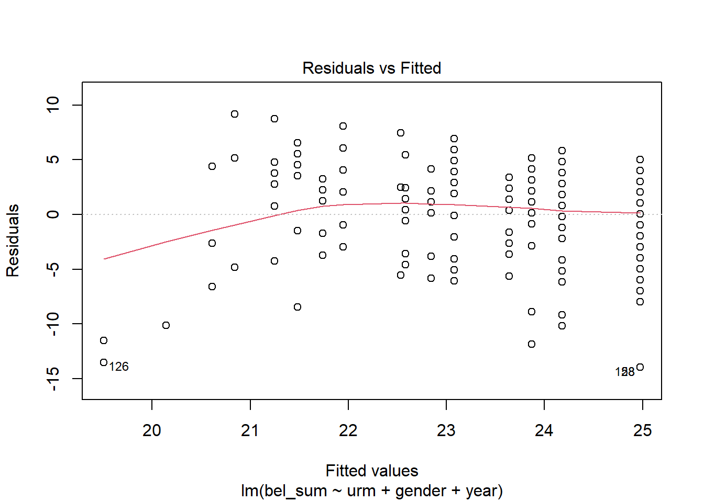
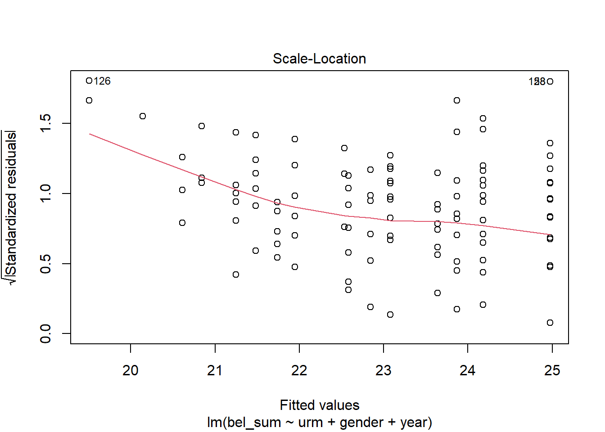

Code
library(tidyverse)
library(psych)
library(lattice)
library(FSA)
library(kableExtra)
knitr::opts_chunk$set(echo = TRUE)library(tidyverse)
library(psych)
library(lattice)
library(FSA)
library(kableExtra)
knitr::opts_chunk$set(echo = TRUE)Many studies exist on how belonging influences in-person students yet there is an absence of literature related to this topic for online learners. This is surprising given that even before the COVID-19 pandemic students studying exclusively online experienced year-over-year growth since at least 2016 (National Center for Educational Statistics, n.d.). High levels of social belonging have repeatedly being found to influence the persistence of in-person students (Fleming et al., 2017; Johnson et al., 2007; Sriram, 2017). With this in mind, the role belonging plays among online students should not be overlooked.
There is no universal definition of belonging, but one way to think about it is a “students’ sense of being accepted, valued, included, and encouraged by others (teacher and peers) in the academic classroom setting and of feeling oneself to be an important part of the life and activity of the class” (Goodenow, 1993). In studies of in-person students, it has been found that not all students experience belonging equally. Some of the student populations that report lower levels of belonging include:
Experiencing a lack of belonging is not innate to these students, though, but rather a reflection of social structural inequalities present in educational systems (Brock, 2019). This reality makes belonging important to explore among students not just generally, but specifically, and is why this study will ask:
How does race influence belonging of online students?
Literature on how demographics influence the social belonging of online students is elusive making it difficult to develop a hypothesis rooted in previous literature. Therefore, since the data for this study comes from online statistics students, the hypotheses for this study will be based on the notion that underrepresented minorities (URM) in STEM experience a lower sense of belonging that students who are not URMs (Thacker et al., 2022).
To understand representation in STEM by race it is helpful to examine this table which shows the breakdown of workers in all jobs compared to all STEM jobs (Fry et al., 2021).
race <- c("Black", "Hispanic", "Asian", "Other", "White")
all_jobs <- c("11%", "17%", "6%", "3%", "63%")
all_stem_jobs <- c("9%", "8%", "13%", "3%", "67%")
jobs <- data.frame(race, all_jobs, all_stem_jobs)
kable(jobs, caption = "Employed adults age 25+ in the 2017-19 American Community Survey") %>%
kable_styling("striped")| race | all_jobs | all_stem_jobs |
|---|---|---|
| Black | 11% | 9% |
| Hispanic | 17% | 8% |
| Asian | 6% | 13% |
| Other | 3% | 3% |
| White | 63% | 67% |
Employees who are White make up the majority of workers in STEM, yet employees who are Asian hold more than double the percentage of STEM jobs compared to the percentage of all jobs held by workers who are Asian (Fry et al., 2021). For this reason, Asian students will not be included as an underrepresented minority group in STEM. However, it is important to be mindful that many ethnic groups fall under a racial category and not all are equally represented in STEM. For instance, although Asians as a whole racial group are not underrepresented in STEM, those who are from Southeast Asia are underrepresented (Shivaram, 2021). Future studies should be mindful of this and seek to explore for both racial and ethnic demographic data.
Hypothesis
The data for this study was collected during the last month of the Fall 2021 semester at a large public university in the mid-west of the United States (Jeng et al., 2023). Students were recruited through voluntary response sampling in an online introduction to statistics course and received extra credit for participating in the study. The instructor of this course was not a member of the research team. A total of 240 students completed the survey and responses from 17 students were removed due to either missing demographics, the same rating for every example, or identical response made to more than 50% of open-ended questions. In total, responses from 223 students are included.
The full dataset can be found here.
To answer the research question for the present study, the following variables have been selected. Details on these variables are included in following sections.
racegenderyearbel_1bel_2bel_2_rbel_3bel_4bel_4_rbel_5bel_5_rbel_6Using the above variables, additional variables were created to aid in analysis. The variable bel_sum was created to sum an overall belonging score for each participant. In addition, the variable urm was created to indicate if a student belongs to an underrepresented minority group or not.
The response options for race include “Asian or Asian American” (1), “Black or African American” (2), “Hispanic or Latino” (3), “White” (4), and “Other” (5). Students who reported their race as “Other” (n = 10) have been removed from this analysis as it cannot be determined if they belong to an underrepresented minority group or not.
The responses for gender include “Man” (2) and “Woman or non-binary” (1). The researchers who collected this data explain that their were so few students who identified as non-binary that the sample was too small for a separate analysis (Jeng et al., 2023). What they did do was run all analysis twice, once with non-binary students excluded and once with this group combine with respondents who identified as women. They found their findings to be the same in both instances and therefore choose to combine these two groups. For the purpose of this study, this variable will be coded as “Male” and “Female.”
The variable year includes four response options: 1, 2, 3 or 4. These correspond to being a Freshman, Sophomore, Junior, or Senior, and values have been coded as such.
A total of 6 Likert questions were asked to measure social belonging which were adapted from Goodenow’s (1993) Psychological Sense of School Membership (PSSM) scale. Five response options (“Not at all true”, “Slightly true”, “Moderately true”, “Mostly true”, and “Completely true”) were provided to students to answer the below questions. Questions 2, 4, and 5 were reversed scored which is why 2 variables exist for each of these questions.
bel_1)bel_2/bel_2_r)bel_3)bel_4/ bel_4_r)bel_5/bel_5_r)bel_6)# read in data
belonging_data <- read_csv("_data/belonging_survey_2022-07-08.csv", show_col_types = FALSE)
# tidy data
data <- belonging_data %>%
# filter to include only 1 set of student belonging responses
filter(example_num == 1) %>%
# filter to include remove the racial category "Other"
filter(race != 5) %>%
# select needed columns
select(race, gender, year, bel_1, bel_2, bel_2_r, bel_3, bel_4, bel_4_r, bel_5, bel_5_r, bel_6) %>%
# create variable bel_sum which sums all belonging responses
mutate(bel_sum = rowSums(across(c(bel_1, bel_2_r, bel_3, bel_4_r, bel_5_r, bel_6)))) %>%
# create variable is_urm which turns race into a binary variable
mutate(urm = case_when(race == 1 ~ "not underrepresented",
race == 4 ~ "not underrepresented",
race == 2 ~ "underrepresented",
race == 3 ~ "underrepresented",))
### Create new variables with Likert scores as an ordered factor
data$f_bel_1 = factor(data$bel_1,
ordered = TRUE,
levels = c("1", "2", "3", "4", "5")
)
data$f_bel_2 = factor(data$bel_2,
ordered = TRUE,
levels = c("1", "2", "3", "4", "5")
)
data$f_bel_3 = factor(data$bel_3,
ordered = TRUE,
levels = c("1", "2", "3", "4", "5")
)
data$f_bel_4 = factor(data$bel_4,
ordered = TRUE,
levels = c("1", "2", "3", "4", "5")
)
data$f_bel_5 = factor(data$bel_5,
ordered = TRUE,
levels = c("1", "2", "3", "4", "5")
)
data$f_bel_6 = factor(data$bel_6,
ordered = TRUE,
levels = c("1", "2", "3", "4", "5")
)
# recode data
data <- data %>%
mutate(gender = recode(gender,
`1` = "Female",
`2` = "Male")) %>%
mutate(race = recode(race,
`1` = "Asian",
`2` = "Black",
`3` = "Hispanic",
`4` = "White")) %>%
mutate(across(bel_1:bel_6,
~ recode(.x, `1` = "Not at all true",
`2` = "Slightly true",
`3` = "Moderately true",
`4` = "Mostly true",
`5` = "Completely true"))) %>%
mutate(year = recode(year,
`1` = "Freshman",
`2` = "Sophmore",
`3` = "Junior",
`4` = "Senior")) # examine data
describe_data <- describe(x=data) %>%
select(c(vars, n, mean, sd, median, min, max, range))
kable(describe_data) %>%
kable_styling("striped")| vars | n | mean | sd | median | min | max | range | |
|---|---|---|---|---|---|---|---|---|
| race* | 1 | 213 | 2.816901 | 1.2846319 | 3 | 1 | 4 | 3 |
| gender* | 2 | 213 | 1.244131 | 0.4305830 | 1 | 1 | 2 | 1 |
| year* | 3 | 213 | 2.220657 | 1.3399330 | 2 | 1 | 4 | 3 |
| bel_1* | 4 | 213 | 2.488263 | 1.2155065 | 2 | 1 | 5 | 4 |
| bel_2* | 5 | 213 | 3.835681 | 0.8334086 | 4 | 1 | 5 | 4 |
| bel_2_r* | 6 | 213 | 1.652582 | 1.1580137 | 1 | 1 | 5 | 4 |
| bel_3* | 7 | 213 | 3.122066 | 1.3612326 | 3 | 1 | 5 | 4 |
| bel_4* | 8 | 213 | 3.741784 | 1.0568691 | 4 | 1 | 5 | 4 |
| bel_4_r* | 9 | 213 | 1.967136 | 1.2029248 | 1 | 1 | 5 | 4 |
| bel_5* | 10 | 213 | 3.981221 | 0.7394697 | 4 | 1 | 5 | 4 |
| bel_5_r* | 11 | 213 | 1.469484 | 0.9292207 | 1 | 1 | 5 | 4 |
| bel_6* | 12 | 213 | 2.225352 | 1.1958716 | 2 | 1 | 5 | 4 |
| bel_sum | 13 | 213 | 23.610329 | 4.4935264 | 25 | 6 | 30 | 24 |
| urm* | 14 | 213 | 1.253521 | 0.4360514 | 1 | 1 | 2 | 1 |
| f_bel_1* | 15 | 213 | 3.680751 | 1.0952106 | 4 | 1 | 5 | 4 |
| f_bel_2* | 16 | 213 | 1.568075 | 1.0100040 | 1 | 1 | 5 | 4 |
| f_bel_3* | 17 | 213 | 2.920188 | 1.2879031 | 3 | 1 | 5 | 4 |
| f_bel_4* | 18 | 213 | 1.868545 | 1.0602582 | 1 | 1 | 5 | 4 |
| f_bel_5* | 19 | 213 | 1.370892 | 0.8290126 | 1 | 1 | 5 | 4 |
| f_bel_6* | 20 | 213 | 3.816901 | 1.1773394 | 4 | 1 | 5 | 4 |
str(data)tibble [213 × 20] (S3: tbl_df/tbl/data.frame)
$ race : chr [1:213] "White" "White" "Asian" "White" ...
$ gender : chr [1:213] "Female" "Male" "Female" "Female" ...
$ year : chr [1:213] "Freshman" "Freshman" "Senior" "Freshman" ...
$ bel_1 : chr [1:213] "Mostly true" "Slightly true" "Completely true" "Mostly true" ...
$ bel_2 : chr [1:213] "Moderately true" "Slightly true" "Not at all true" "Not at all true" ...
$ bel_2_r: chr [1:213] "Moderately true" "Mostly true" "Completely true" "Completely true" ...
$ bel_3 : chr [1:213] "Mostly true" "Mostly true" "Mostly true" "Mostly true" ...
$ bel_4 : chr [1:213] "Slightly true" "Moderately true" "Mostly true" "Slightly true" ...
$ bel_4_r: chr [1:213] "Mostly true" "Moderately true" "Slightly true" "Mostly true" ...
$ bel_5 : chr [1:213] "Slightly true" "Slightly true" "Not at all true" "Not at all true" ...
$ bel_5_r: chr [1:213] "Mostly true" "Mostly true" "Completely true" "Completely true" ...
$ bel_6 : chr [1:213] "Mostly true" "Moderately true" "Completely true" "Completely true" ...
$ bel_sum: num [1:213] 23 20 26 27 28 17 23 25 29 25 ...
$ urm : chr [1:213] "not underrepresented" "not underrepresented" "not underrepresented" "not underrepresented" ...
$ f_bel_1: Ord.factor w/ 5 levels "1"<"2"<"3"<"4"<..: 4 2 5 4 4 4 3 4 4 3 ...
$ f_bel_2: Ord.factor w/ 5 levels "1"<"2"<"3"<"4"<..: 3 2 1 1 1 4 1 1 1 1 ...
$ f_bel_3: Ord.factor w/ 5 levels "1"<"2"<"3"<"4"<..: 4 4 4 4 4 3 2 1 5 3 ...
$ f_bel_4: Ord.factor w/ 5 levels "1"<"2"<"3"<"4"<..: 2 3 4 2 1 3 1 1 1 1 ...
$ f_bel_5: Ord.factor w/ 5 levels "1"<"2"<"3"<"4"<..: 2 2 1 1 1 2 1 1 1 1 ...
$ f_bel_6: Ord.factor w/ 5 levels "1"<"2"<"3"<"4"<..: 4 3 5 5 5 1 3 5 5 4 ...# create xtabs and bar plot to visualize variables
# race
xt_race <- xtabs(~race, data = data)
kable(xt_race) %>%
kable_styling("striped")| race | Freq |
|---|---|
| Asian | 59 |
| Black | 21 |
| Hispanic | 33 |
| White | 100 |
barplot(xt_race,
xlab = "Race",
ylab = "Frequency")
# urm
xt_urm <- xtabs(~urm, data = data)
kable(xt_urm) %>%
kable_styling("striped")| urm | Freq |
|---|---|
| not underrepresented | 159 |
| underrepresented | 54 |
barplot(xt_urm,
xlab = "URM",
ylab = "Frequency")
# gender
xt_gender <- xtabs(~gender, data = data)
kable(xt_gender) %>%
kable_styling("striped")| gender | Freq |
|---|---|
| Female | 161 |
| Male | 52 |
barplot(xt_gender,
xlab = "Gender",
ylab = "Frequency")
# bel_sum
xt_sum <- xtabs(~bel_sum, data = data)
kable(xt_sum) %>%
kable_styling("striped")| bel_sum | Freq |
|---|---|
| 6 | 1 |
| 8 | 1 |
| 10 | 1 |
| 11 | 2 |
| 12 | 1 |
| 13 | 2 |
| 14 | 2 |
| 15 | 3 |
| 16 | 1 |
| 17 | 7 |
| 18 | 9 |
| 19 | 6 |
| 20 | 7 |
| 21 | 10 |
| 22 | 14 |
| 23 | 19 |
| 24 | 16 |
| 25 | 31 |
| 26 | 21 |
| 27 | 25 |
| 28 | 11 |
| 29 | 12 |
| 30 | 11 |
barplot(xt_sum,
xlab = "Belonging",
ylab = "Frequency")
# f_bel_1
xt_1 <- xtabs(~f_bel_1, data = data)
kable(xt_1) %>%
kable_styling("striped")| f_bel_1 | Freq |
|---|---|
| 1 | 9 |
| 2 | 22 |
| 3 | 52 |
| 4 | 75 |
| 5 | 55 |
barplot(xt_1,
xlab = "I feel like a real part of this class",
ylab = "Frequency")
# f_bel_2
xt_2 <- xtabs(~f_bel_2, data = data)
kable(xt_2) %>%
kable_styling("striped")| f_bel_2 | Freq |
|---|---|
| 1 | 149 |
| 2 | 28 |
| 3 | 19 |
| 4 | 13 |
| 5 | 4 |
barplot(xt_2,
xlab = "Sometimes I feel as if I don’t belong in this class",
ylab = "Frequency")
# f_bel_3
xt_3 <- xtabs(~f_bel_3, data = data)
kable(xt_3) %>%
kable_styling("striped")| f_bel_3 | Freq |
|---|---|
| 1 | 36 |
| 2 | 49 |
| 3 | 52 |
| 4 | 48 |
| 5 | 28 |
barplot(xt_3,
xlab = "I am included in lots of activities in this class",
ylab = "Frequency")
# f_bel_4
xt_4 <- xtabs(~f_bel_4, data = data)
kable(xt_4) %>%
kable_styling("striped")| f_bel_4 | Freq |
|---|---|
| 1 | 108 |
| 2 | 48 |
| 3 | 38 |
| 4 | 15 |
| 5 | 4 |
barplot(xt_4,
xlab = "I feel very different from most other students in this class",
ylab = "Frequency")
# f_bel_5
xt_5 <- xtabs(~f_bel_5, data = data)
kable(xt_5) %>%
kable_styling("striped")| f_bel_5 | Freq |
|---|---|
| 1 | 164 |
| 2 | 32 |
| 3 | 9 |
| 4 | 3 |
| 5 | 5 |
barplot(xt_5,
xlab = "I wish I were in a different class",
ylab = "Frequency")
# f_bel_6
xt_6 <- xtabs(~f_bel_6, data = data)
kable(xt_6) %>%
kable_styling("striped")| f_bel_6 | Freq |
|---|---|
| 1 | 13 |
| 2 | 14 |
| 3 | 50 |
| 4 | 58 |
| 5 | 78 |
barplot(xt_6,
xlab = "I feel proud of belonging to this class",
ylab = "Frequency")
Before conducting hypothesis testing and fitting regression models, it is helpful to examine key variables through visualization.
The first visualization is a boxplot with the dependent variable bel_sum on the y-axis and independent variable urm on the x-axis. It reveals that the mean belonging score is similar for both groups, however the range of responses is greater among students who belong to a URM group.
# bel_sum, urm
ggplot(data, aes(x = urm, y = bel_sum, color = urm))+
geom_boxplot()+
ylab("Belonging")+xlab("URM")
The second boxplot adds gender, one of the control variables selected for this study. It reveals the mean belonging score is similar for females in both URM groups and males in both URM groups. It can also be observed that males, compared to females, have lower means among both URM groups and that the range of belonging scores is greater for URM students than non-URM students.
# bel_sum, urm, gender
ggplot(data, aes(x = urm, y = bel_sum, color = gender))+
geom_boxplot()+
ylab("Belonging")+xlab("URM")This final boxplot examines year, another control variable. This visualization reveals more variability between the two URM groups than seen in previous visualizations. Where students are URMs, the mean belonging score decreases as year in school increases. An additional observation among students who are non-URMs is that the mean belonging score appears to be consistent for students in their 1st, 2nd, and 4th year of studies, but drops for students in their 3rd year.
# bel_sum, urm, year
data %>%
mutate(year = as.factor(year)) %>%
ggplot(aes(x = urm, y = bel_sum, color = factor(year, levels = c("Freshman", "Sophmore", "Junior", "Senior")))) +
geom_boxplot() +
ylab("Belonging") +
xlab("URM") +
labs(color = "Year")In the next section of visualizations, stacked bar charts have been selected to examine the explanatory variable urm against each of the 6 individual belonging questions which have been selected as response variables (bel_1:bel_6). A couple initial observations that stand out are:
bel_2).bel_4) than non-URM students.bel_5) than non-URM students.Hypothesis testing and regression will determine if these observations, and those mentioned previously, are significant.
bel_plot <-function(myxvar, myxlabel) {
data %>%
group_by({{myxvar}}, urm) %>%
summarise(count = n()) %>%
mutate(percent = count/sum(count) * 100) %>%
ggplot(aes(x = factor ({{myxvar}}, levels = c("Not at all true", "Slightly true", "Moderately true", "Mostly true", "Completely true")),
y = percent,
fill = urm)) +
geom_bar(stat = "identity", position = "fill") +
labs(y = "Percent",
x = myxlabel,
title = "Sense of belonging by whether students' race is underrepresented in STEM " )
}
bel_plot(bel_1, "I feel like a real part of this class")bel_plot(bel_2, "Sometimes I feel as if I don’t belong in this class")
bel_plot(bel_3, "I am included in lots of activities in this class")
bel_plot(bel_4, "I feel very different from most other students in this class")
bel_plot(bel_5, "I wish I were in a different class")
bel_plot(bel_6, "I feel proud of belonging to this class")The first hypothesis test conducted is an ANOVA. This test has been selected to compare the means of URM and non-URM students.
fit_sum <- aov(bel_sum ~ urm, data = data)
summary(fit_sum) Df Sum Sq Mean Sq F value Pr(>F)
urm 1 72 72.23 3.621 0.0584 .
Residuals 211 4208 19.95
---
Signif. codes: 0 '***' 0.001 '**' 0.01 '*' 0.05 '.' 0.1 ' ' 1The results of this ANOVA reveal that Pr(>F) is 0.0584. This is just slightly greater than p < .05, therefore the effect size should also be examined before deciding if the null hypothesis should or shouldn’t be rejected. Eta squared has been selected to measure the effect size.
effectsize::eta_squared(fit_sum)For one-way between subjects designs, partial eta squared is equivalent
to eta squared. Returning eta squared.# Effect Size for ANOVA
Parameter | Eta2 | 95% CI
-------------------------------
urm | 0.02 | [0.00, 1.00]
- One-sided CIs: upper bound fixed at [1.00].The effect size for the ANOVA between bel_sum and urm is 0.02 which is small. This indicates the null hypothesis should not be rejected and means the difference in mean of belonging between students in this study who are and are not URM is not statistically significant.
The next round of hypothesis testing examines the explanatory outcome variable urm against each of the six individual belonging questions that make up the belonging scale. As these are all categorical variables, a chi-squared test will be used.
The first chi-squared test examines bel_1, which includes responses to the statement “I feel like a real part of this class.” It results in a p-value of 0.6553 which is not statistically significant.
chi_bel_plot <- function(mydata, myxvar, mytitle) {
ggplot({{mydata}}, aes(x=factor ({{myxvar}}, levels = c("Not at all true", "Slightly true", "Moderately true", "Mostly true", "Completely true")),y=Freq, fill=urm)) +
geom_bar(stat="identity",position="dodge") +
labs(x = mytitle)
}
# chisq and bel_1
chisq.test(data$bel_1, data$urm)
Pearson's Chi-squared test
data: data$bel_1 and data$urm
X-squared = 2.4404, df = 4, p-value = 0.6553bel_1_urm <- data.frame(with(data, table(bel_1,urm)))
chi_bel_plot(bel_1_urm, bel_1, "I feel like a real part of this class")The second chi-squared test examines bel_2, which includes responses to the statement “Sometimes I feel as if I don’t belong in this class.” It results in a p-value of 0.01644 which is statistically significant.
# chisq and bel_2
chisq.test(data$bel_2, data$urm)
Pearson's Chi-squared test
data: data$bel_2 and data$urm
X-squared = 12.098, df = 4, p-value = 0.01664bel_2_urm <- data.frame(with(data, table(bel_2,urm)))
chi_bel_plot(bel_2_urm, bel_2, "Sometimes I feel as if I don’t belong in this class")This chi-squared test examines bel_3, which includes responses to the statement “I am included in lots of activities in this class.” It results in a p-value of 0.9815 which is not statistically significant.
# chisq and bel_3 (SIGNIFICANT P)
chisq.test(data$bel_3, data$urm)
Pearson's Chi-squared test
data: data$bel_3 and data$urm
X-squared = 0.41141, df = 4, p-value = 0.9815bel_3_urm <- data.frame(with(data, table(bel_3,urm)))
chi_bel_plot(bel_3_urm, bel_3, "I am included in lots of activities in this class")
This next chi-squared test examines bel_4, which includes responses to the statement “I feel very different from most other students in this class.” It results in a p-value of 0.1081 which is not statistically significant.
# chisq and bel_4
chisq.test(data$bel_4, data$urm)
Pearson's Chi-squared test
data: data$bel_4 and data$urm
X-squared = 7.5825, df = 4, p-value = 0.1081bel_4_urm <- data.frame(with(data, table(bel_4,urm)))
chi_bel_plot(bel_4_urm, bel_4, "I feel very different from most other students in this class")
The following chi-squared test examines bel_5, which includes responses to the statement “I wish I were in a different class.” It results in a p-value of 0.02648 which is statistically significant.
# chisq and bel_5 (SIGNIFICANT P)
chisq.test(data$bel_5, data$urm)
Pearson's Chi-squared test
data: data$bel_5 and data$urm
X-squared = 11.007, df = 4, p-value = 0.02648bel_5_urm <- data.frame(with(data, table(bel_5,urm)))
chi_bel_plot(bel_5_urm, bel_5, "I wish I were in a different class")
This final chi-squared test examines bel_6, which includes responses to the statement “I feel proud of belonging to this class.” It results in a p-value of 0.2512 which is not statistically significant.
# chisq and bel_6
chisq.test(data$bel_6, data$urm)
Pearson's Chi-squared test
data: data$bel_6 and data$urm
X-squared = 5.372, df = 4, p-value = 0.2512bel_6_urm <- data.frame(with(data, table(bel_6,urm)))
chi_bel_plot(bel_6_urm, bel_6, "I feel proud of belonging to this class")To recap the results of these six chi-squared tests, bel_2, “Sometimes I feel as if I don’t belong in this class”, and bel_5, “I wish I were in a different class”, were both statistically significant. This indicates a relationship between each of these two specific measure of belonging and urm.
In this section regression models will be compared to determine which has the best fit. In addition to the variables used in hypothesis testing, gender and year will be include as control variables and urm * gender as an interaction term. This interaction term has been included as previous research indicates the intersection of gender and racial identities can reveal significant differences (Rainey et al., 2018).
The first regression model examines bel_sum and urm. Note that the p-value, 0.05841, is identical to what is seen in the ANOVA results above. The adjusted R-squared, 0.01221, is very close to 0 which indicates the response variable, bel_sum, is not explained by the predictor variable, urm. Another way to think of this is that belonging to an URM group only explains 1.22% of the variation in a student’s sense of belonging.
From this model it can be concluded that being part of a URM group leads to a -1.3386 decrease in belonging compared to those who are not-URM.
# bel_sum & urm
summary(lm(bel_sum ~ urm, data = data))
Call:
lm(formula = bel_sum ~ urm, data = data)
Residuals:
Min 1Q Median 3Q Max
-16.611 -1.950 1.050 3.050 7.389
Coefficients:
Estimate Std. Error t value Pr(>|t|)
(Intercept) 23.9497 0.3542 67.621 <2e-16 ***
urmunderrepresented -1.3386 0.7034 -1.903 0.0584 .
---
Signif. codes: 0 '***' 0.001 '**' 0.01 '*' 0.05 '.' 0.1 ' ' 1
Residual standard error: 4.466 on 211 degrees of freedom
Multiple R-squared: 0.01687, Adjusted R-squared: 0.01221
F-statistic: 3.621 on 1 and 211 DF, p-value: 0.05841# Fit the linear model
model <- lm(bel_sum ~ urm, data = data)The second regression model examines bel_sum, urm, and gender. The p-value, 0.0114, is significant, however, the adjusted R-square is low. This indicates the relationship between these variables is not strong enough to explain the variation between the response and predictor variables.
From this model it can be concluded that gender is statistically significant. Identifying as male leads to a -1.6454 decrease in belonging compared to females.
# bel_sum, urm & gender
summary(lm(bel_sum ~ urm + gender, data = data))
Call:
lm(formula = bel_sum ~ urm + gender, data = data)
Residuals:
Min 1Q Median 3Q Max
-15.3923 -2.3429 0.6571 2.9623 8.6077
Coefficients:
Estimate Std. Error t value Pr(>|t|)
(Intercept) 24.3429 0.3889 62.593 <2e-16 ***
urmunderrepresented -1.3052 0.6963 -1.875 0.0622 .
genderMale -1.6454 0.7051 -2.333 0.0206 *
---
Signif. codes: 0 '***' 0.001 '**' 0.01 '*' 0.05 '.' 0.1 ' ' 1
Residual standard error: 4.42 on 210 degrees of freedom
Multiple R-squared: 0.04172, Adjusted R-squared: 0.03259
F-statistic: 4.571 on 2 and 210 DF, p-value: 0.0114The third regression model replaces gender with year. The overall p-value, 0.003374, in this model is more significant than the last, however the adjusted R-squared is still low. This model explains just 5.47% of the variation between the response and predictor variables.
From this model it can be concluded that being a Junior or Senior is statistically significant. Being a Senior leads to the greatest decrease, -3.2020, in belonging compared to students in other years of their studies. Being a Junior shows a -2.6332 decrease in belonging compared to students in other groups.
# bel_sum, urm & year
summary(lm(bel_sum ~ urm + year, data = data))
Call:
lm(formula = bel_sum ~ urm + year, data = data)
Residuals:
Min 1Q Median 3Q Max
-14.390 -1.870 0.293 2.495 9.610
Coefficients:
Estimate Std. Error t value Pr(>|t|)
(Intercept) 24.7070 0.4527 54.579 < 2e-16 ***
urmunderrepresented -1.1149 0.6915 -1.612 0.10843
yearJunior -2.6332 0.9602 -2.742 0.00663 **
yearSenior -3.2020 1.2096 -2.647 0.00874 **
yearSophmore -0.8367 0.6829 -1.225 0.22193
---
Signif. codes: 0 '***' 0.001 '**' 0.01 '*' 0.05 '.' 0.1 ' ' 1
Residual standard error: 4.369 on 208 degrees of freedom
Multiple R-squared: 0.07259, Adjusted R-squared: 0.05476
F-statistic: 4.07 on 4 and 208 DF, p-value: 0.003374This next regression model includes bel_sum, urm, gender and year. It has the most significant p-value, 0.001652, of any model yet. The adjusted R-squared value is also higher, however it only explains 6.63% percent of the variation which is still rather low.
This model also shows that being a Junior or Senior is statistically significant. Being Male is now just slightly above p < .05.
# bel_sum, urm, gender & year
summary(lm(bel_sum ~ urm + gender + year, data = data))
Call:
lm(formula = bel_sum ~ urm + gender + year, data = data)
Residuals:
Min 1Q Median 3Q Max
-13.9744 -2.1816 0.8184 3.0256 9.1568
Coefficients:
Estimate Std. Error t value Pr(>|t|)
(Intercept) 24.9744 0.4711 53.010 <2e-16 ***
urmunderrepresented -1.1034 0.6872 -1.606 0.1099
genderMale -1.3365 0.6998 -1.910 0.0576 .
yearJunior -2.3901 0.9626 -2.483 0.0138 *
yearSenior -3.0278 1.2054 -2.512 0.0128 *
yearSophmore -0.7928 0.6790 -1.168 0.2443
---
Signif. codes: 0 '***' 0.001 '**' 0.01 '*' 0.05 '.' 0.1 ' ' 1
Residual standard error: 4.341 on 207 degrees of freedom
Multiple R-squared: 0.08865, Adjusted R-squared: 0.06663
F-statistic: 4.027 on 5 and 207 DF, p-value: 0.001652The final regression model using bel_sum includes the interaction between urm and gender as the explanatory variable. It has a significant p-value, 0.008266, but the adjusted R-squared is again low explaining just 4.1% of the variation between variables.
# bel_sum, urm * gender
summary(lm(bel_sum ~ urm * gender, data = data))
Call:
lm(formula = bel_sum ~ urm * gender, data = data)
Residuals:
Min 1Q Median 3Q Max
-13.9286 -2.1736 0.8264 2.8264 10.0714
Coefficients:
Estimate Std. Error t value Pr(>|t|)
(Intercept) 24.1736 0.4000 60.428 <2e-16 ***
urmunderrepresented -0.6236 0.8026 -0.777 0.4381
genderMale -0.9367 0.8183 -1.145 0.2536
urmunderrepresented:genderMale -2.6847 1.5927 -1.686 0.0934 .
---
Signif. codes: 0 '***' 0.001 '**' 0.01 '*' 0.05 '.' 0.1 ' ' 1
Residual standard error: 4.4 on 209 degrees of freedom
Multiple R-squared: 0.05457, Adjusted R-squared: 0.041
F-statistic: 4.021 on 3 and 209 DF, p-value: 0.008266The regression model that stood out as being the strongest is the one that includes both control variables, gender and year. It was selected as it has the highest adjusted R-squared value. Therefore, the regression model that will be used to preform diagnostics is lm(bel_sum ~ urm + gender + year, data = data).
In the Residuals vs Fitted plot both the linearity and constant variance assumptions are violated. These violations are evident as the line is not linear and the points are not equally horizontal around the line at 0. There are also residuals which stand out from the rest indicating outliers.
plot(lm(bel_sum ~ urm + gender + year, data = data), which = 1)
In the QQ plot, the residuals fall on the line towards the center but curve towards the ends. This indicates the data isn’t part of a normal distribution, therefore the normality assumption has been violated (Ford, 2015).
plot(lm(bel_sum ~ urm + gender + year, data = data), which = 2)
In the Scale-Location plot the red line is not horizontal, rather it is decreasing. The variance of the points is also not equal which indicates heteroskedasticity. This is a violation of the constant variance assumption.
plot(lm(bel_sum ~ urm + gender + year, data = data), which = 3)The Cook’s Distance plot shows a violation of the influential observation assumption. This is because there are points with a Cook’s distance larger than 4/n, which in this study is 4/213 = 0.019.
plot(lm(bel_sum ~ urm + gender + year, data = data), which = 4)
Borck, C.R. (2020). “I belong here.”: Culturally sustaining pedagogical praxes from an alternative high school in Brooklyn. The Urban Review, 52(2), 376-391. https://doi.org/10.1007/s11256-019-00536-z
Fleming, A.R., Oertle, K.M., Plotner, A.J., & Hakun, J.G. (2017). Influence of social factors on student satisfaction among college students with disabilities. Journal of College Student Development, 58(2), 215-228. https://doi.org/10.1353/csd.2017.0016
Ford, C. (2015, August 26). Understanding Q-Q plots. University of Virgina Library. https://data.library.virginia.edu/understanding-q-q-plots/
Fry, R., Kennedy, B., & Funk, C. (2021, April 1). STEM jobs see uneven progress in increasing gender, racial and ethnic diversity. Pew Research Center. https://www.pewresearch.org/science/2021/04/01/stem-jobs-see-uneven-progress-in-increasing-gender-racial-and-ethnic-diversity
Goodenow. (1993). Classroom belonging among early adolescent students: relationships to motivation and achievement. The Journal of Early Adolescence, 13(1), 21–43. https://doi.org/10.1177/0272431693013001002
Jeng, A., Bosch, N., & Perry, M. (2023). Sense of belonging predicts perceived helpfulness in online peer help-giving interactions. The Internet and Higher Education, 57, 100901. https://doi.org/10.1016/j.iheduc.2022.100901
Johnson, D.R., Soldner, M., Leonard, J. B., Alvarez, P., Inkelas, K. K., Rowan-Kenyon, H., & Longerbeam, S. (2007). Examining sense of belonging among first-year undergraduates from different racial/ethnic groups. Journal of College Student Development, 48(5), 525–542. https://doi.org/10.1353/csd.2007.0054
Longwell-Grice, R., Adsitt, N.Z., Mullins, K., & Serrata, W. (2016). The first ones: Three studies on first-generation college students. NACADA Journal, 36(2), 34-46. https://doi.org/10.12930/NACADA-13-028
National Center for Educational Statistics. (n.d.). IPEDS Data Explorer. https://nces.ed.gov/ipeds/search/ViewTable?tableId=29450
Rainey, K., Dancy, M., Mickelson, R. et al. (2018). Race and gender differences in how sense of belonging influences decisions to major in STEM. International Journal of STEM Education, 5(1), 10-14. https://doi.org/10.1186/s40594-018-0115-6
Shivaram, D. (2021, December 12). Southeast Asians are underrepresented in STEM. The label ‘Asian’ boxes them out more. NPR. https://www.npr.org/2021/12/12/1054933519/southeast-asian-representation-science
Sriram, R. (2017). Student affairs by the numbers: Quantitative research and statistics for professionals. Stylus Publishing, LLC.
Thacker, I., Seyranian, V., Madva, A., Duong, N.T., & Beardsley, P. (2022). Social connectedness in physical isolation: Online teaching practices that support under-represented undergraduate students’ feelings of belonging and engagement in STEM. Education Sciences, 12(2), 61-83. https://doi.org/10.3390/educsci12020061